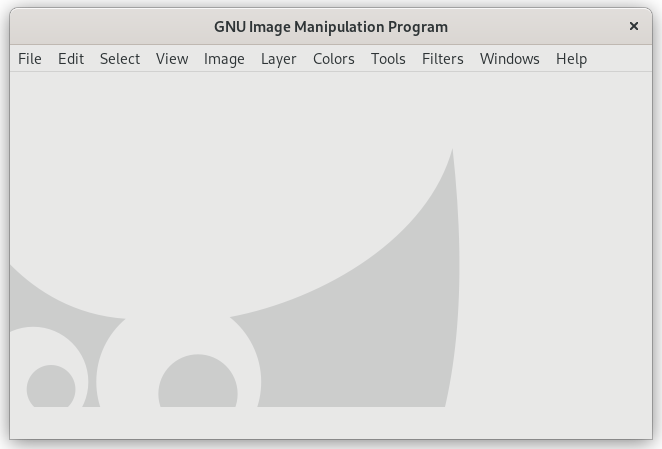

Figure 4.7. Tool dialogs are gone (use TAB)

GIMP's main window with hidden tool dialogs using TAB.
When you only see the image window and none of the tool windows, you most likely hit TAB by accident. This is the default shortcut to show or hide all docks.
To fix this just press TAB again. Alternatively you can use → to toggle between show and hide.
![[Note]](images/note.png)
|
Note |
|---|---|
|
Sometimes using TAB to hide the tool dialogs doesn't work. This happens when the focus is inside the tool dialogs instead of in the image. To remedy this, put the focus on the image, or use the menu command mentioned above. |